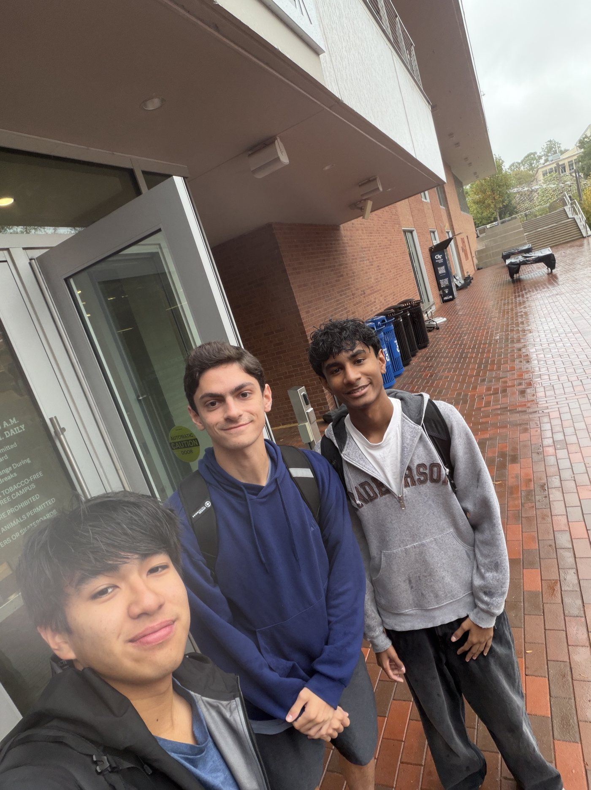
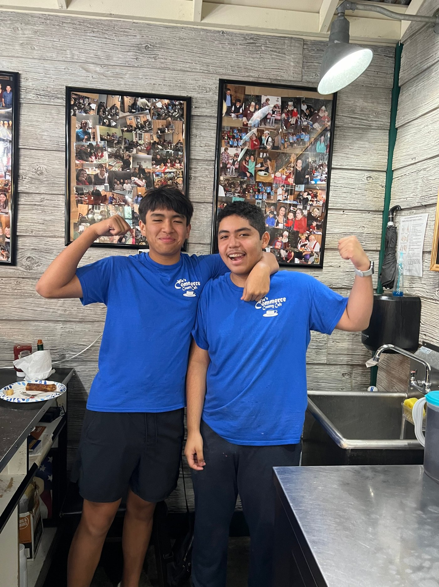
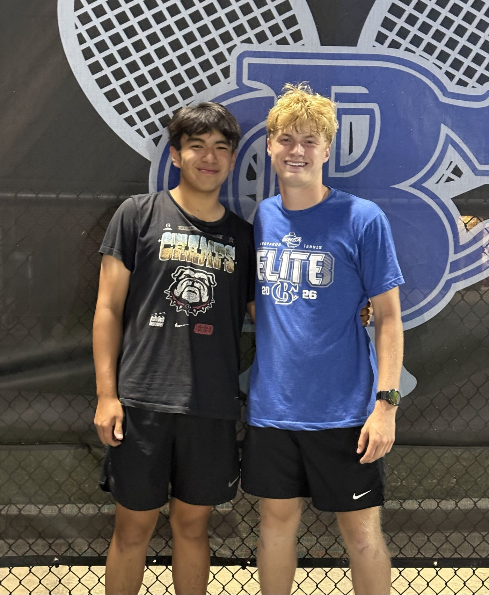
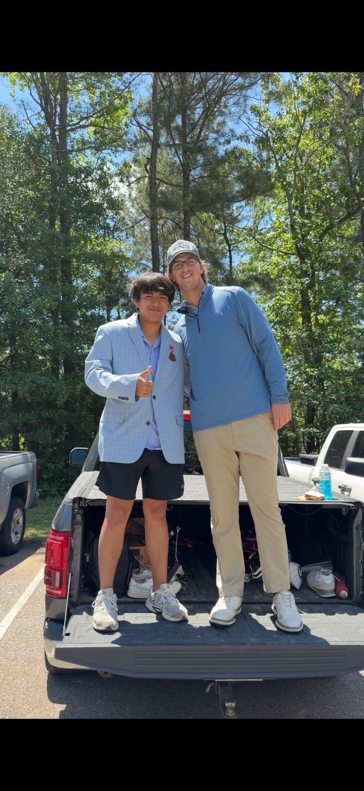

Biography
About Me
I am Thomas Nguyen, an Electrical Engineering student at the Georgia Institute of Technology. I grew up in Commerce, Georgia, and I am interested in Electrical Energy Systems and Circuit Technology.

Restaurant Experience
I worked at the Commerce Country Cafe from 2021 - 2026, where eventually I took on Restaurant Team Lead: Under this role I supervised junior staff, trained new hires, and ran cashier and to-go operations for a dining room that serves more than two hundred customers a day. Restaurant work teaches you a specific kind of discipline. I am blessed to have received the opportunity to work in such a fast-paced environment where I believe I picked up so many different skills.

Why Electrical Engineering
I came to Georgia Tech knowing I wanted to build things that matter at scale, and I chose Electrical Engineering because it sits at the point where physics becomes infrastructure. Over my first semester in ECE 1100, I spent a lot of time reading about where the field is actually going, and the same theme kept appearing: demand for electric power is rising sharply, driven in large part by data centers and electrification, while the equipment that delivers that power is aging and in short supply.
I researched that problem directly for my ECE Deep Dive presentation, where I looked at the shortage of large power transformers and at the modular controllable transformer being developed by Professor Deepak Divan here at Georgia Tech. The takeaway for me was not just that the problem is large. It was that the problem is being worked on at the school I am attending, by people I could conceivably learn from, and that the solutions involve exactly the mix of power systems and power electronics I find interesting.
That is why my thread interests have settled on Electric Energy Systems and Circuit Technology, with continuing interest in Electronic Devices. I want the version of this career where I understand the hardware at the component level and can also stand on a site and be accountable for whether the whole installation works.
Competing
I played varsity golf and tennis at Banks County High School and captained both. The golf team made three consecutive state tournament appearances, finishing third, fourth, and third. In tennis I played singles and first doubles, and we reached the first final four in the school's history.

